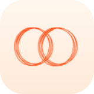
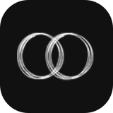
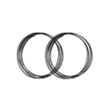
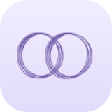
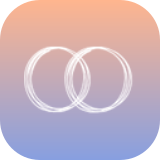

Orange Uniion
#FF7749 / #FF541B
Les cercles du logo original, déclinés en neuf icônes.
Orange, monochrome et nuances crépusculaires.
#FF7749 / #FF541B
#FF541B / #FF541B

#FFF7EE / #FFEAD9

#111111 / #111111

#FFFFFF / #FFFFFF
#FFFFFF / #FFFFFF
#7D98EE / #4868C5

#F1EDFF / #E2DBFA

#FFB58E / #879FE0